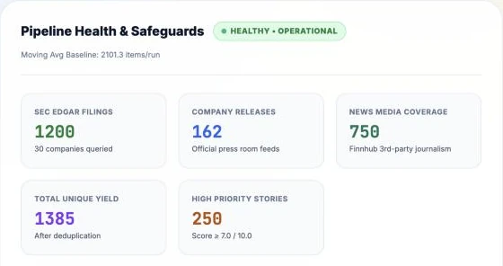
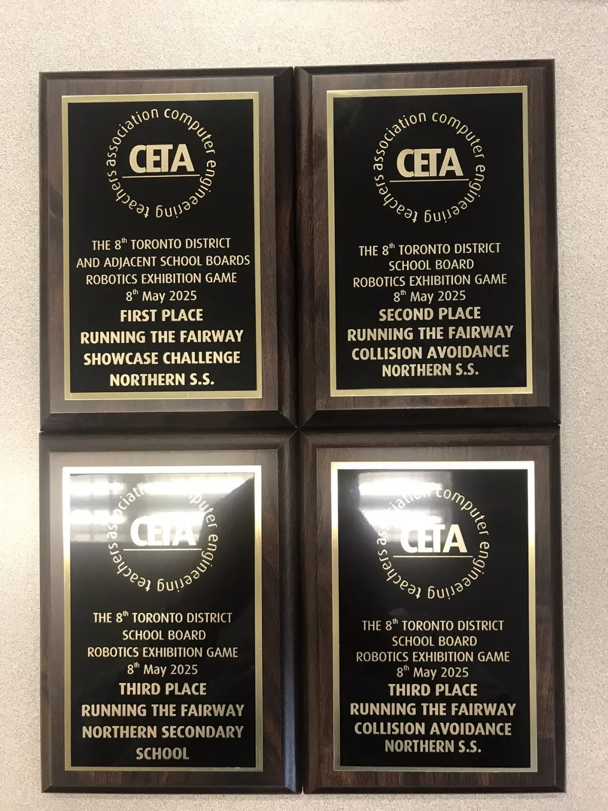
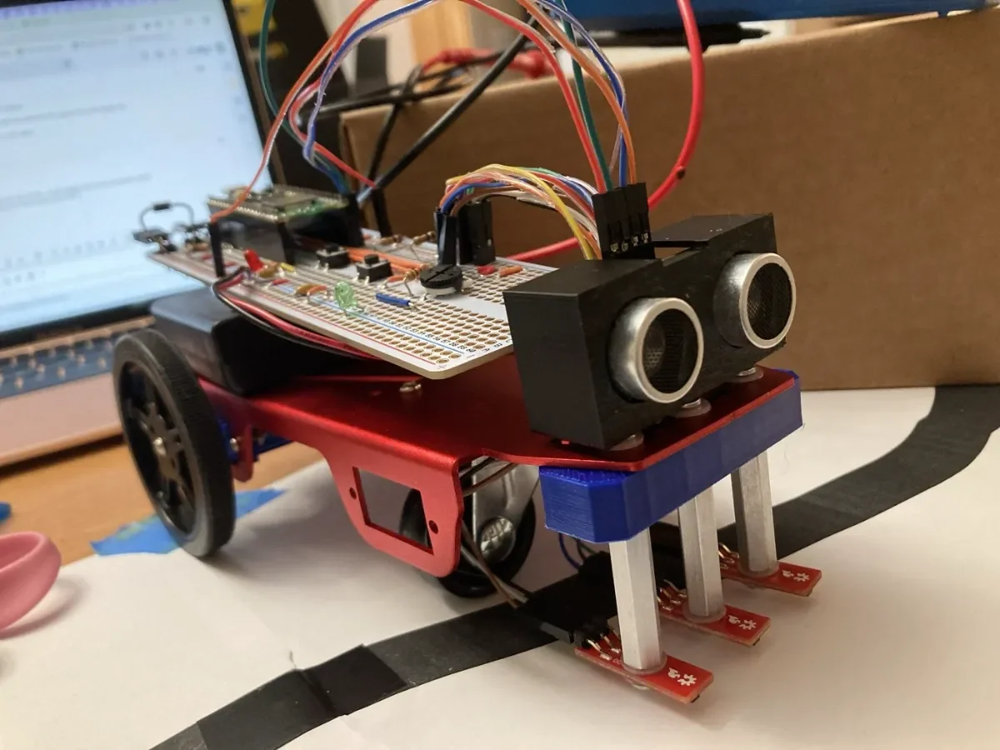
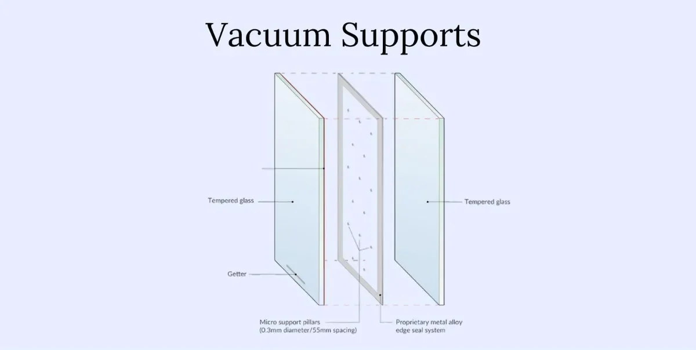
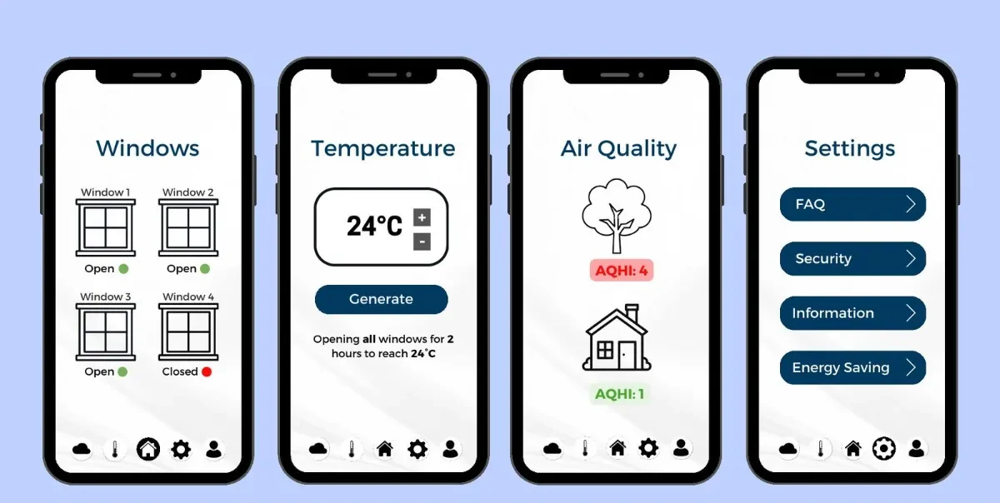
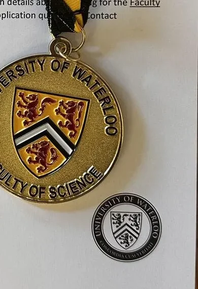

University of Toronto
B.A.Sc. TrackOne Engineering · Expected May 2031
Pursuing Computer Engineering.
Toronto, ON · Open to Summer 2027 internships
I build things that have to actually keep running.
First-year TrackOne Engineering student at the University of Toronto, headed for Computer Engineering. Powertrain at UTSM, aerodynamics at UTWind. Automated pipelines, competition robots, small games. I like the struggling part more than I probably should.
start with the big one
Independent · 2026 – present
Following the market, I kept hitting the same wall. The news that actually moves a stock is scattered: a filing lands on the SEC site, the company posts a release, and five outlets rewrite the same story. Nothing tells you which one matters. Big firms pay for tools that sort this out. Everyone else just gets the noise. I wanted one place that pulls it all in, drops the repeats, and tells you plainly what's worth your attention. So I built it.
StockPulse is a full-stack news pipeline for the stock market. It pulls from SEC filings, company investor-relations feeds and Finnhub, and turns three noisy firehoses into one clean stream for a 30-company watchlist.
it's live. go poke it. (tap the screenshot to zoom)
The same story shows up in five places at once. A deduplication engine collapses the repeats, then a rule-based classifier scores what's left from 0 to 10. The top stories get a plain-English takeaway.
One recent run: 1,200 SEC filings, 162 company releases and 750 news articles.
every story gets a score + a takeaway
Scored stories roll up by company and sector, so the whole watchlist fits on one screen. Analytics pages chart it all with Chart.js: how fast disclosures are arriving, which tickers are getting hit, and what kind of news it is.
the whole watchlist, one screen
A CI/CD pipeline runs 56 automated tests before anything ships. A self-healing monitor catches failed daily data runs and recovers them on its own. Built across six-plus feature phases with a graduate-student co-developer.
the pipeline reports on itself
and the red dot in the ring? a failed run healing itself.

U of T Supermileage Team · 2026 – present
I've been hooked on hydrogen cars for a long time. A car whose only exhaust is water still feels like science fiction to me, and I want to be one of the people who makes it normal. Supermileage is the closest I can get right now: a team obsessed with going as far as possible on as little energy as possible, where a lighter part or a smarter motor controller shows up directly on the scoreboard.
I'm on the powertrain team at UTSM, the U of T student team that designs, builds and races ultra-energy-efficient vehicles at the Shell Eco-marathon Americas.
FOC in one picture: the teal arrow stays 90° ahead of the magnets
U of T Wind Turbine Design Team · 2026 – present
Wind power is clean energy you can actually watch working. What pulled me in is how much of a turbine comes down to the shape of its blades. A few degrees of twist or a slightly different airfoil, and the same breeze makes more power. I want to understand that well enough to design it myself.
I'm an aerodynamics engineer on UTWind, U of T's student team that designs and builds small wind turbines.
air moves faster over the top of the blade. that's the whole trick.
Hackathon · Nov – Dec 2025
One day to build a fully autonomous robot that could survive simulated extraterrestrial conditions. We designed it, wired up the motion sensors, wrote the C++, troubleshot it against the clock, then defended it to the judges.
★ Best Science Awardmove your cursor over the radar. it'll notice.
Solo game · August 2025
A 3D extraction game I built on my own in Unreal Engine: gameplay mechanics, interactive systems and world building, with a lot of iterative debugging along the way.
built solo, start to finish
Robotics competition · Jan – May 2025
Designed and refined robot mechanisms with a competitive team for a run of challenges, from raw speed to obstacle avoidance, all running on a Raspberry Pi.


SHAD Canada · Engineering design · Jul – Aug 2024
A multidisciplinary team design for a smart window that cuts how much energy a building uses. We did the research, weighed design alternatives, and built the technical presentation.
★ Best Video Presentation

In progress
My next project is being built right now. It lands here when it's ready.
still assembling...
Education · Leadership
Education
B.A.Sc. TrackOne Engineering · Expected May 2031
Pursuing Computer Engineering.
OSSD · June 2026
Graduated with Honours, 96% average. AP Advanced Functions and English. Ontario Scholar.
Leadership
United Way Student Leadership Committee · 2024 – 2025
Ran budgeting and financial planning for student-led fundraising, helping raise over $3,000.
Northern SS Student Council · 2024 – 2025
Brought student feedback into school-wide initiatives and organized events.
Northern SS · 2025 – 2026
Designed, prototyped and tested competition systems; CAD in Onshape.
Awards

Contact
Lucasdt416@gmail.com
© 2026 Lucas Thomas · Toronto · every dot on this page is one particle system, re-shaping itself as you scroll.
drag to look around · tap outside to close